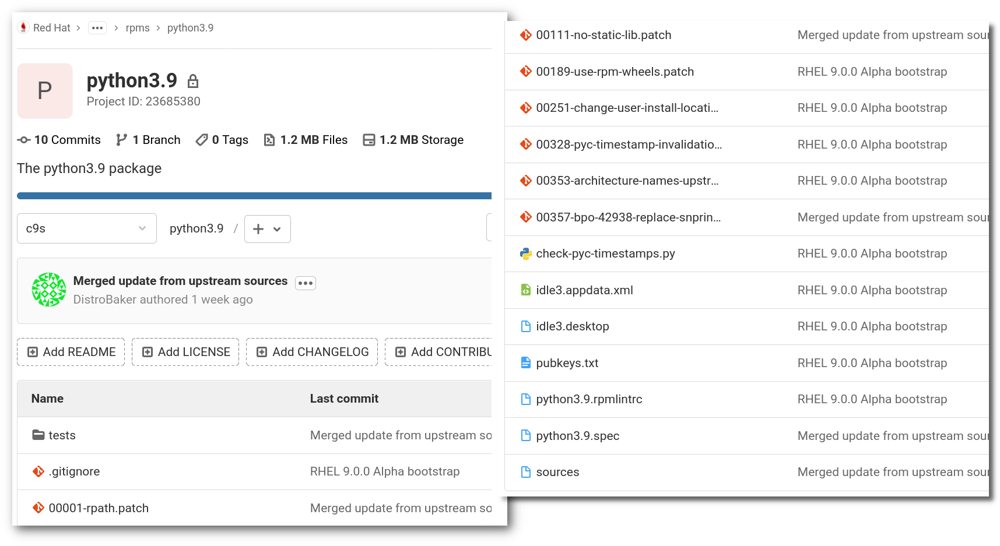
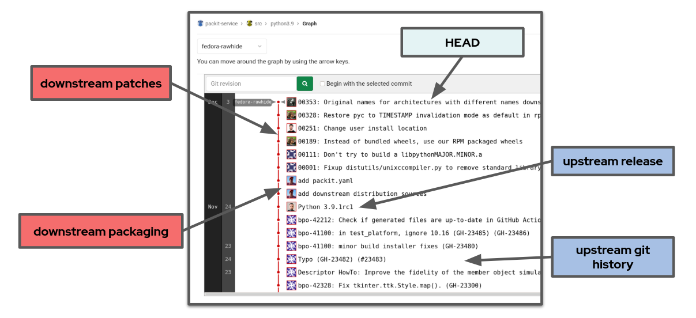

class: center, middle # Everyone can contribute to RHEL now! ## CentOS Dojo @ FOSDEM 2021 <div class="footer"><h3>Tomas Tomecek</h3></div> --- # `/who "Tomáš Tomeček"` .left-column[ * Principal Software Engineer @ Red Hat * Product Owner of Packit project * Containers, automation, integration, packaging * I ❤ free & open source software ] .right-column[ ] --- ## How did contributions work for CentOS Linux in the past? -- * They mostly didn't. -- * CentOS Linux 8 and earlier is downstream to RHEL. * So all changes need to go through RHEL first. * Occasionally people would send patches to RHEL Bugzilla. * Sometimes it took years to fix things. * CentOS-specific changes were not possible. * Except for SIGs. ??? * The main reason being that CentOS Linux is downstream to RHEL. * And some would never be fixed --- class: center, middle # CentOS Stream 9 will be different... --- # CentOS Stream 9 * Open Source development model. * Upstream for RHEL 9. * Will be available to be consumed and for contributions later this year. * You can look at [Fedora ELN](https://docs.fedoraproject.org/en-US/eln/) in the meantime. * CVEs and embargoed content will be private. * Kernel development will be open completely. --- # Continuous Integration & Delivery * The contribution model is built around rigorous testing. * Changes proposed to the Stream need to pass all checks! * RHEL maintainers will use CentOS Stream 9 to develop RHEL 9. * You can contribute tests if you care how certain features work. * Continuously available. * Reporting issues is a contribution as well. --- # How do I contribute? * All repositories will be hosted on GitLab. * It will be as easy as opening a merge request. * The contributions will go through the standard open source review process. * Maintainers will decide what’s getting in. * [Open a Bugzilla against the CentOS Stream version](https://bugzilla.redhat.com/enter_bug.cgi?product=Red%20Hat%20Enterprise%20Linux%208&version=CentOS%20Stream). --- # CentOS Stream 8 * Available to be consumed right now! * RHEL 8 is still the upstream. * Contributions going through Red Hat Bugzilla still. * It’s hard to course-correct along the way. --- # Two ways to contribute code (dist-git)  --- # Two ways to contribute code (src)  --- # Did anyone contribute already? * [glibc changes backport by H J](https://git.stg.centos.org/source-git/glibc/pull-request/1) * [fwupd did not work on CentOS Stream](https://bugzilla.redhat.com/show_bug.cgi?id=1856512) * [thunderbird got broken for a little bit](https://bugzilla.redhat.com/show_bug.cgi?id=1885882) * [trusted boot problems](https://bugzilla.redhat.com/show_bug.cgi?id=1873296) * [disabling subscription notifications in gnome-settings-daemon for CentOS Stream](https://bugzilla.redhat.com/show_bug.cgi?id=1827030) * [grep & initscripts incompatibility](https://bugzilla.redhat.com/show_bug.cgi?id=1824324) * [fixes for argument parsing for multiple dnf commands](https://git.centos.org/rpms/dnf/pull-request/1) * ...and many more --- # TL;DR * “This is where we are right now” * We make sure CentOS Stream is as stable as possible. * Expect more news from us as things get finished. * We are thrilled about CentOS Stream 9. * You can maintain your own stack via SIGs. --- class: middle # Q&A * <span class="fa fa-globe"></span> [CentOS Stream](https://www.centos.org/centos-stream/) * <span class="fa fa-github-square"></span> [github.com/TomasTomecek/speaks](https://github.com/TomasTomecek/speaks) * <span class="fa fa-twitter-square"></span> [@TomasTomec](https://twitter.com/TomasTomec)